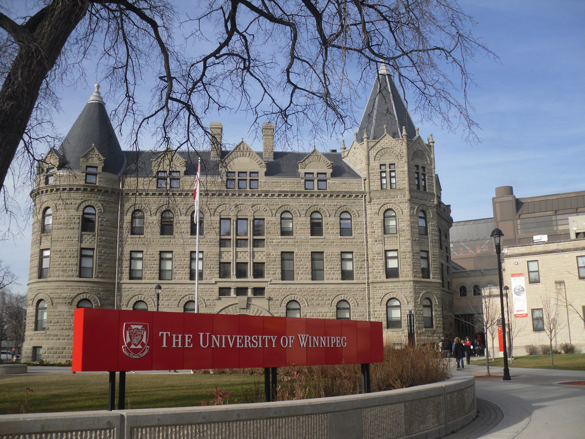

Winnipeg is the capital of Manitoba – and the geographical center of North America. It was incorporated as a city in 1873.

The city sits at the junction of the Red and Assiniboine Rivers – a place referred to as The Forks.
The closest city to Winnipeg with a population of over a million is Minneapolis-Saint Paul, Minnesota – 700 kilometres away.
Winnipeg averages 27 thunderstorms per year.
On the shortest day of the year the sun rises at 8:24 am and sets at 4:29 pm. On the longest day of the year the sun rises
at 5:20 am and sets at 9:41 pm.
Winnipeg’s train station was designed by the same architects who designed New York City’s Union Station.
Winnipeg was the first city in the world to develop the 911 emergency number.
The Royal Winnipeg Ballet is Canada’s oldest dance company. It’s also the longest continuously operating ballet company in North America.
The Winnipeg Art Gallery has the biggest collection of contemporary Inuit art in the world.

The LONGEST skating rink in the world – that freezes naturally is found in Winnipeg – and not in Ottawa as was recently reported
in Outside Magazine. The skating takes you along the Red and Assiniboine Rivers over a length of 8.5 kilometers.

Curling is big – so big it might be the curling capital of Canada.
The Festival du Voyageur celebrates Canada’s fur trading past and French heritage and culture. It’s the biggest winter festival in western Canada.
Every year it takes place over 10 days in February. This year it runs from February 15-24th.
The Winnipeg Jets – one of the professional hockey teams in the NHL – has an amazing fan base. Although they have the smallest market of all the NHL
teams they sold more merchandise than any others.
Other professional sports teams include the Winnipeg Blue Bombers (football) and the Winnipeg Goldeyes (baseball).
Universities in Winnipeg include the University of Manitoba, the University of Winnipeg, the Canadian Mennonite University and the University of St. Boniface.
Canada’s newest National Museum – the Canadian Museum for Human Rights – is the first national museum to be located outside of the capital region.